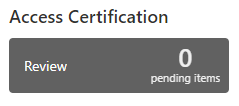
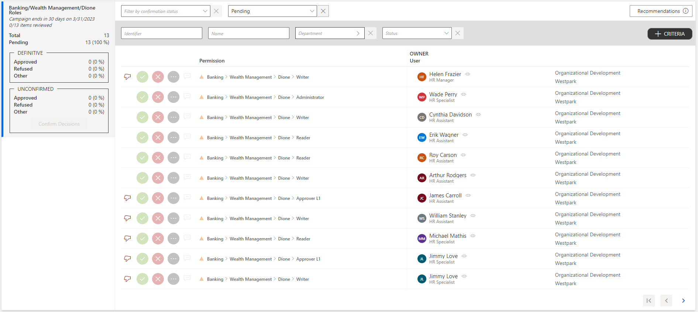
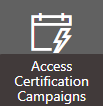
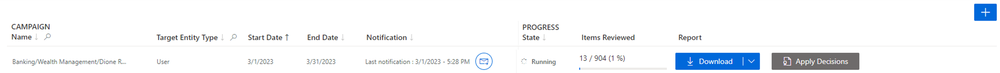
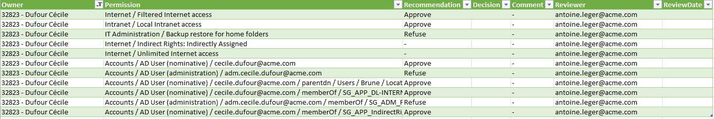
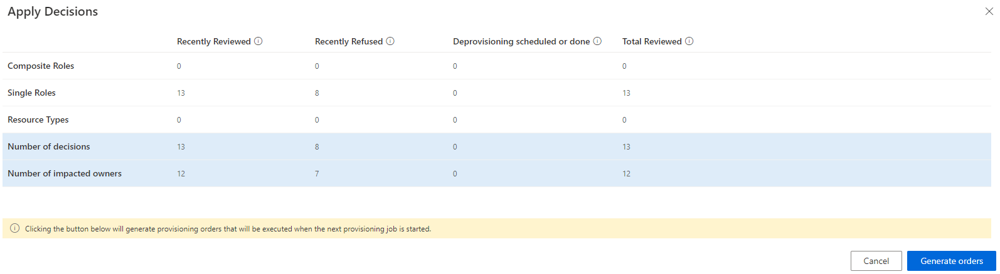

Execute a Certification Campaign
How to execute access certification campaigns, i.e. review specific entitlement assignments and deprovision inappropriate access.
Overview
The aim of an access certification campaign is to review specific entitlement assignments for specific identities, in order to certify them and express an audit opinion that justifies their necessity.
Once certification campaigns are scheduled, the assigned reviewers must decide for all relevant assignments if they ought to be deleted or not.
Participants and Artifacts
The execution part should be performed in cooperation with the staff who review access in the campaign scheduling.
The monitoring part should be performed in cooperation with the staff in charge of campaign scheduling.
| Input | Output |
|---|---|
|
Schedule a Certification Campaign
(required) |
Certified access |
Execute Certification
Execute certification by proceeding as follows:
-
Access the ongoing campaigns by clicking on the Access Certification section on the home page.

On this page, all assignments to be reviewed are listed.

Each assignment can be commented by clicking on the corresponding icon.
-
Choose one of the three possibilities to verify all assignments one by one:
In order to help reviewers in the decision-making process, each assignment shows a recommendation icon, indicating whether said assignment complies with the role model.
See the icons below this note.
The Recommended icon indicates that the entitlement has been automatically granted according to the security policy. You can approve it because it is compliant.
The Not Recommended icon indicates that the entitlement does not comply with the security policy. It is recommended to refuse it, unless the user really needs it.
An absence of any icon indicates that the entitlement does not comply with the security policy. However, it has been manually granted or denied. Thus there is no recommendation, please review this entitlement carefully.- Either click on the approval icon to confirm that this entitlement is necessary for this identity.
- Or click on the decline icon to confirm that this entitlement is not necessary for this identity.
- Or click on the three dots icon to highlight that this entitlement is not part of your scope of responsibility and forward it to the adequate person.
-
Click on Confirm Decisions on the left of the page.
If you've made an erroneous decision, exiting the page before confirming offers the possibility to quit without saving and start over from the last confirm.
Monitor a Certification Campaign
Existing certification campaigns are listed on the page accessible via the Access Certification Campaigns button on the home page in the Administration section.


Get reports
A Download button is available for each campaign. It downloads a CSV report that lists all the entitlement assignments to be reviewed, the corresponding reviewers and their decisions.

Send notifications
The notification icon on the line of a given campaign offers the possibility to send reminder notifications to the staff who has not finished processing the campaign.
Generate provisioning orders
Once entitlement assignments have been reviewed, the final step is to apply these decisions.
An Apply Decisions button is available for each campaign. It shows all the decisions made in the campaign. The campaign administrator can then decide to actually apply said decisions and generate the appropriate provisioning orders for deprovisioning unjustified entitlements. Said orders will be considered during the next provisioning job.
